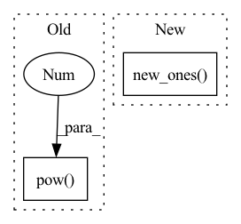

Pattern ID :2262

Before Change
Mean Squared Discriminator Loss
// pylint: disable=no-self-use
def forward(self, score_fake, score_real):
loss_real = torch.mean(torch.sum(torch.pow(score_real - 1.0, 2), dim=[1, 2]))
loss_fake = torch.mean(torch.sum(torch.pow(score_fake, 2), dim=[1, 2]))
loss_d = loss_real + loss_fake
return loss_d, loss_real, loss_fake
After Change
// pylint: disable=no-self-use
def forward(self, score_fake, score_real):
loss_real = self.loss_func(score_real, score_real.new_ones(score_real.shape))
loss_fake = self.loss_func(score_fake, score_fake.new_zeros(score_fake.shape))
loss_d = loss_real + loss_fake
return loss_d, loss_real, loss_fake
In pattern: SUPERPATTERN
Frequency: 4
Non-data size: 2
Instances
Fragment ID: 7913448
Project Name: coqui-ai/tts
Commit Name: 3eb730acf0a660d96f3af78cde0f5379b72fb3c6
Time: 2020-06-12
Author: erogol@hotmail.com
File Name: vocoder/layers/losses.py
M Class Name: MSEDLoss
N Class Name: MSEDLoss
M Method Name: forward(3)
N Method Name: forward(3)
M Parent Class: nn.Module
N Parent Class: nn.Module
M File Name: vocoder/layers/losses.py
N File Name: vocoder/layers/losses.py
M Start Line: 112
M End Line: 113
N Start Line: 117
N End Line: 118
'>
Before Change
// pylint: disable=no-self-use
def forward(self, score_fake, score_real):
loss_real = torch.mean(torch.sum(torch.pow(score_real - 1.0, 2), dim=[1, 2]))
loss_fake = torch.mean(torch.sum(torch.pow(score_fake, 2), dim=[1, 2]))
loss_d = loss_real + loss_fake
return loss_d, loss_real, loss_fake
After Change
// pylint: disable=no-self-use
def forward(self, score_fake, score_real):
loss_real = self.loss_func(score_real, score_real.new_ones(score_real.shape))
loss_fake = self.loss_func(score_fake, score_fake.new_zeros(score_fake.shape))
loss_d = loss_real + loss_fake
return loss_d, loss_real, loss_fake
'>
Fragment ID: 7913450
Project Name: coqui-ai/tts
Commit Name: 5547ddeb618eb9d8b3dbbee5b4313dc697d78b09
Time: 2020-06-15
Author: erogol@hotmail.com
File Name: vocoder/layers/losses.py
M Class Name: MSEDLoss
N Class Name: MSEDLoss
M Method Name: forward(3)
N Method Name: forward(3)
M Parent Class: nn.Module
N Parent Class: nn.Module
M File Name: vocoder/layers/losses.py
N File Name: vocoder/layers/losses.py
M Start Line: 112
M End Line: 113
N Start Line: 117
N End Line: 118
'>
Before Change
else:
// compute normalization
degs = graph.in_degrees().float().clamp(min=1)
norm = th.pow(degs, -0.5).to(feat.device).unsqueeze(1)
// compute (D^-0.5 * A * D^-0.5)^k X
for _ in range(self._k):
After Change
graph = graph.add_self_loop()
if edge_weight is not None:
size = (graph.num_nodes(),) + edge_weight.size()[1:]
self_loop = edge_weight.new_ones(size)
edge_weight = torch.cat([edge_weight, self_loop])
else:
graph = graph.local_var()
'>
Fragment ID: 7913452
Project Name: edisonleeeee/graphwar
Commit Name: c43665fd30401c63acbd50175da1880509a52d21
Time: 2021-12-06
Author: cnljt@outlook.com
File Name: graphwar/nn/sgconv.py
M Class Name: SGConv
N Class Name: SGConv
M Method Name: forward(4)
N Method Name: forward(4)
M Parent Class: nn.Module
N Parent Class: nn.Module
M File Name: graphwar/nn/sgconv.py
N File Name: graphwar/nn/sgconv.py
M Start Line: 141
M End Line: 176
N Start Line: 144
N End Line: 171